macOS blocks the first launch because Kaset isn’t notarised yet. Allow it once:
- Open Kaset and click Done on the warning.
- Go to System Settings → Privacy & Security and click Open Anyway.
Or clear the quarantine flag in Terminal:
xattr -cr /Applications/Kaset.app